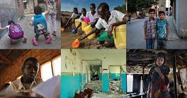
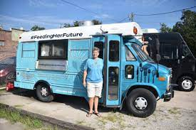

Introduction:
In a remote village nestled deep within the mountains of Nepal, access to quality education was once a distant dream. Residents of the village, predominantly farmers and their families, were forced to fetch water from polluted streams, leading to waterborne diseases and a never-ending struggle for survival. That was until the intervention of our NGO, "Room to Read."
Challenges:
Limited access to quality education, particularly for girls.
High illiteracy rates.
Insufficient school infrastructure.
NGO Intervention
"Room to Read" recognized the urgent need to provide this community with a sustainable source of clean water. The project team conducted a thorough assessment of the area and collaborated with local authorities and community leaders to find a suitable solution.
Success Story:
After months of planning and hard work, the NGO successfully implemented a gravity-fed water supply system this is the key highlights of the project
Clean Water Access:
A new reservoir and distribution network were established, ensuring clean and safe water access to every household in the village.
Health Improvements:
The incidence of waterborne diseases dramatically decreased, leading to improved health and well-being among community members, especially children and the elderly.
Economic Benefits:
With the burden of water collection alleviated, families had more time for farming and income-generating activities, resulting in improved economic conditions.
Long-Term Impact:
Years after the project's completion, the village continues to thrive. Access to clean water remains a vital resource, and the community takes pride in its well-maintained water supply system. Health and living conditions have significantly improved, and the success story of this project serves as an inspiration for neighboring villages facing similar challenges.

Introduction:
The Challenge:
High youth unemployment rates.
Limited access to quality education and job opportunities for young people.
A need for youth to become self-reliant and create job opportunities for themselves and others.
Program Mission:
NYEI was established with the mission of equipping young individuals with the skills, resources, and support needed to become successful entrepreneurs. The program focuses on the following key aspects:
Entrepreneurship Training:
Youth participants attend comprehensive entrepreneurship training workshops that cover business planning, marketing, financial management, and innovation.
Mentorship:
Experienced entrepreneurs and business leaders mentor and guide the young participants, providing valuable insights and networking opportunities.
Access to Capital:
NYEI offers access to seed funding and microloans to help young entrepreneurs kickstart their businesses.
Startup Success:
Samuel's app, "NairobiRide," gained popularity and transformed into a thriving ride-sharing platform, creating job opportunities for local drivers and solving transportation issues in the city.
